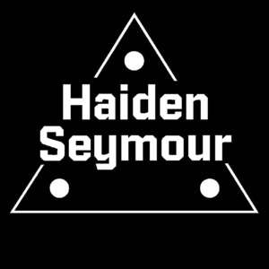

Trade Mark Journal No.2025/034 22 August 2025
UK00004248347 12 August 2025 (9,41,42)

- Class 9
- Video games software; Downloadable video game programs; Interactive video game programs; Downloadable interactive entertainment software for playing video games; Video game computer programs; Video and computer game programs; Downloadable video game software; Computer video game software; Downloadable computer game software; Computer game software, downloadable; Downloadable game software; Computer games software; Downloadable interactive entertainment software for playing computer games; Computer gaming software; Downloadable software in the nature of a mobile application for playing games; Game development software; Software programs for video games; Video game software; Downloadable computer game programs; Computer games programs [software]; Downloadable computer games; Computer games entertainment software; Computer game software downloadable from a global computer network; Interactive game software; Computer games programmes downloaded via the internet [software]; Computer programs for video and computer games; Video game programs; Computer game programs; Interactive computer game programs; Computer games programs; Computer game software for use with on-line interactive games; Computer application software featuring games and gaming; Game software; Interactive multimedia software for playing games; Interactive entertainment computer software for video games; Interactive video software; Interactive multimedia game programs; Games software for use with video game consoles; Interactive entertainment software; Interactive multimedia computer game programs; Downloadable electronic games; Interactive multimedia computer games programmes; Downloadable electronic game programs; Interactive entertainment software for use with computers; Computer programmes for playing games.
- Class 41
- Providing online video games; Video game entertainment services; Entertainment services in the nature of video games; Publishing of interactive computer and video game software; Interactive computer game services; Online computer game services; On-line computer games; Providing on-line video games; Computer and video game amusement services; Video game services; Provision of online computer games; Providing on-line interactive computer games.
- Class 42
- Development of video and computer games; Computer programming of video games; Programming of video game software; Video game software design; Video game software development; Programming of computer game software; Development of computer game software; Design and development of computer game software; Computer programming of video and computer games; Design and development of video game software; Video game development services; Design of computer game software.
Haiden Seymour